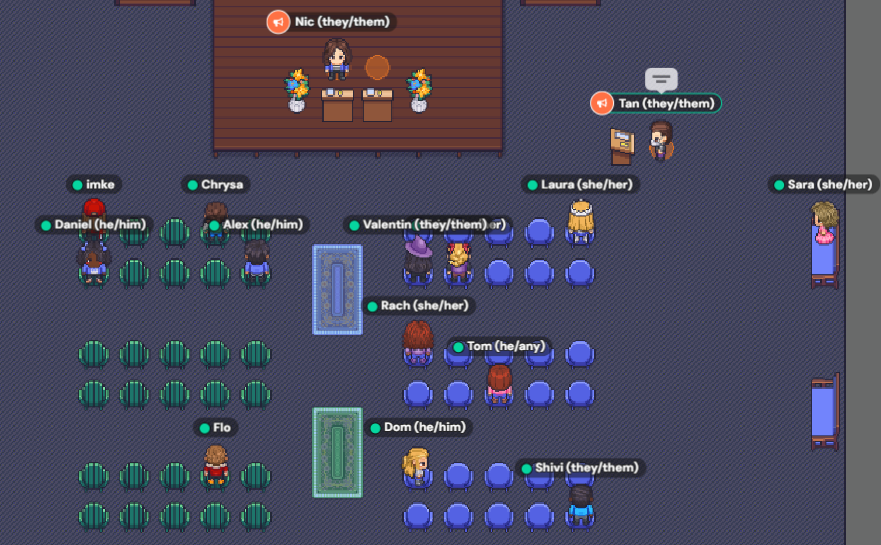
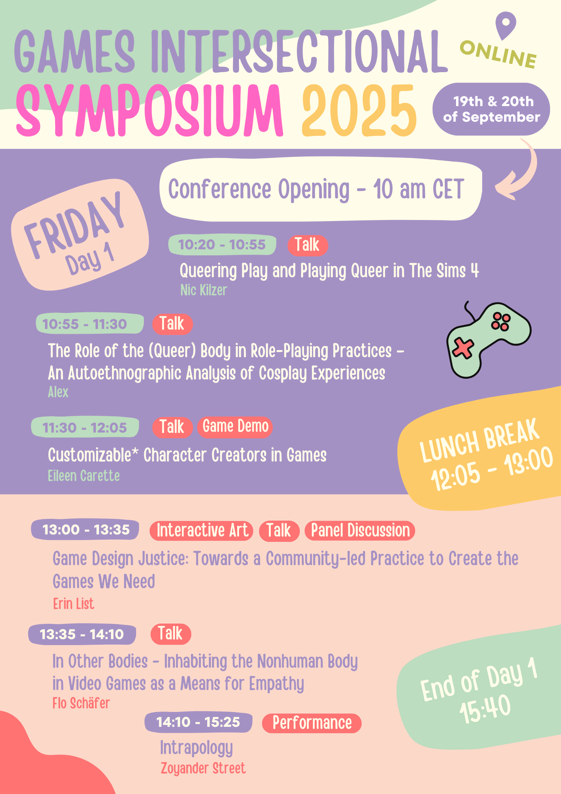
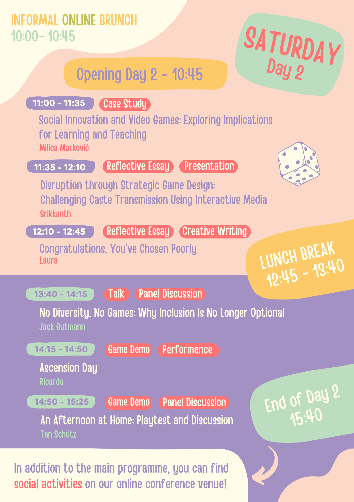

A community space for games, care, resistance, and playful solidarity.
We bring together people from marginalized communities — and those who want to support them — across game studies, game development, art, academia, and play.
Through roundtables, workshops, zines, symposia, and informal gatherings, we create spaces to share knowledge, build confidence, and support each other.
Whether you are a researcher, student, developer, artist, streamer, organizer, or simply curious about games: you are welcome here.
What are we doing now?
We hold regular monthly roundtables! Check our Discord server for the exact date and topic of our next meetup. We'd love to see you there.
Host a Session
We always welcome community members to host talks, workshops, or game club discussions. Got an idea? We can help you make it happen!
📬 Get in Touch
Questions? Ideas? Want to pitch a workshop or collaborate?
gamesintersectional@gmail.comAccessibility Feedback
If there is anything we can do to make this website or our events more accessible for you, please let us know. We are always learning and want to improve.
About GIRT
Games Intersectional Roundtable (GIRT) supports marginalized individuals in video games and academia, including women, LGBTQ+ people, people of color, immigrants/displaced people, and people with disabilities.
- A community initiative based in Austria but open internationally.
- A space for roundtables, workshops, reading/game clubs, informal gatherings, skill-sharing, and collaborative projects.
- A non-hierarchical space for students, researchers, developers, artists, organizers, and curious people.
- A community that values care, accessibility, equity, and intersectionality.
Our Values
Intersectionality
Rooted in Kimberlé Crenshaw's work and Black feminist thought, this acknowledges that different forms of oppression overlap. We center these interconnected realities rather than using it as a buzzword.
Care over Competition
We prioritize mutual support, emotional wellbeing, and trauma-informed interactions over academic or industry rivalries.
Equity, not just Diversity
Inviting underrepresented people to the table isn't enough; we focus on giving people the resources and safety they need to thrive.
Anti-Gatekeeping
You don't need to be an "expert" or prove your marginalization to be here. Lived experience is deeply respected.
Community-Led Learning
Knowledge sharing flows in all directions in a non-hierarchical way.
Playfulness & Experimentation
We love games! We value trying new things, making mistakes, and having fun together.
GIRT Team

Kseniia
(she/they)

Rachel
(she/her)

Tan
(they/them)

Tom
(he/any)
What We Do
Monthly Roundtables
Our core meetups where members gather to discuss current projects, industry trends, and topics of shared interest in a safe, supportive setting.
Game / Reading Club
We select and discuss games, essays, and literature that resonate with our community's focus on inclusivity, accessibility, and representation.
Workshops & Skills
Community-led practical sessions covering a range of topics, from creative writing to coding basics and portfolio building.
Online & Hybrid
While based in Austria, we host digital events via Discord and GatherTown to ensure our global community can connect and participate.
Peer Support
Providing guidance, navigating academia/industry barriers together, and offering a space to celebrate each other's successes.
Projects & Symposia
Collaborative creative works, including our massive 2025 Symposium and community-authored Zines that document our shared knowledge.
GI Symposium 2025
Held September 19–20, 2025 • Online via GatherTown


📚 Proceedings & Zine
The academic proceedings and community zine from the symposium are available in our archive.


🎮 About the Symposium
What is intersectionality?
Intersectionality is a concept developed by legal scholar Kimberlé Crenshaw to describe how different forms of oppression, like racism, sexism, ableism, classism, and more, don’t act separately, but overlap and reinforce each other. A queer migrant woman will face different challenges than a white disabled man or a neurodivergent trans person — because systems of oppression are interconnected.
We believe designing inclusive spaces means recognizing those intersections — and also our limitations. We know that intersectionality was not coined for white academics, but as a framework rooted in the lived experiences and resistance of Black women and other women of color. We aim to honor that origin by working to create spaces where underrepresented voices are not only heard, but centered.
What is a symposium?
A symposium is a gathering where people come together to share ideas, experiences, and projects — usually through presentations, discussions, and workshops. At Games Intersectional, our symposium is: a place to present your work (in whatever format you like) and a space to exchange ideas with others across disciplines and perspectives.
Why this symposium?
The GI Symposium is a space for marginalized voices in games to connect, create, and reflect — whether through research, storytelling, design, or community practice. We are not here to reproduce gatekeeping or hierarchy. We’re here to share knowledge, build care-based networks, and open doors for each other.
Topics & Tracks
- Playing with Power: labor, oppression, subverting systems
- Decolonize the Game: Indigenous design, non-Western stories
- Intersectional Realities: queerness, migration, race, disability
- Games of Care: trauma-informed design, mutual aid
- Games of Resistance: activist games, radical worldbuilding
- Accessibility: inclusive design, access as praxis
- Meta Reflection: pedagogy, writing from the margins
- Open Track: If you don't fit into a box!
Formats & Contributions
- Presentation & Workshop
- Panel Discussion
- Game Demo & Interactive Art
- Creative Writing & Reflective Essay
- Community Project
🗓️ Archived Programme
Friday, 19 September 2025
-
10:00 – 10:20Conference Opening
-
10:20 – 10:55Queering Play and Playing Queer in The Sims 4Nic Kilzer
-
10:55 – 11:30The Role of the (Queer) Body in Role‑Playing PracticesAlex
-
11:30 – 12:05Customizable* Character Creators in GamesEileen Carette
-
13:00 – 13:35Game Design Justice: Towards a Community‑led PracticeErin List
-
13:35 – 14:10In Other Bodies — Inhabiting the Nonhuman BodyFlo Schäfer
-
14:10 – 15:25IntrapologyZoyander Street and team
Saturday, 20 September 2025
-
11:00 – 11:35Social Innovation and Video GamesMilica Marković
-
11:35 – 12:10Disruption through Strategic Game DesignSrikanth
-
12:10 – 12:45Congratulations, You’ve Chosen PoorlyLaura
-
13:40 – 14:15No Diversity, No Games: Why Inclusion Is No Longer OptionalJack Gutmann
-
14:15 – 14:50Ascension DayRicardo
-
14:50 – 15:25An Afternoon at Home: Playtest and DiscussionTan Schütz
GIS25 Organizing Committee
The 2025 symposium was made possible by the dedicated work of the full organizing committee:
Kseniia Harshina, Rachel Gorden, Tan Schuetz, Tom Tucek, Shivi Vats, and Sara Skubiszewska.
Join Us
We would love to have you in our community! Here is how we manage our spaces:
Reach Out
To join, simply email us at gamesintersectional@gmail.com.
Safer Spaces
Access to our Discord server requires reaching out to an organizer first. This helps us keep the space safer and intentional.
No "Proof" Required
You do not need to "prove" your marginalization to participate. We trust you. If you feel this space is for you, you are welcome.
Allies Welcome
Allies are very welcome to join and learn, provided they come with respect, humility, and care for marginalized folks.